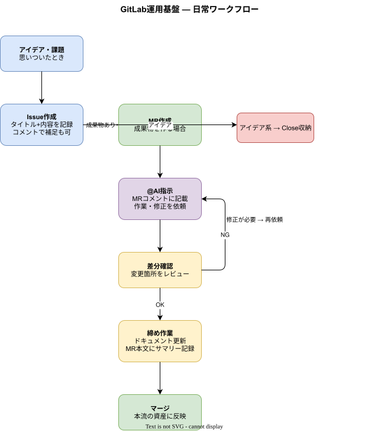
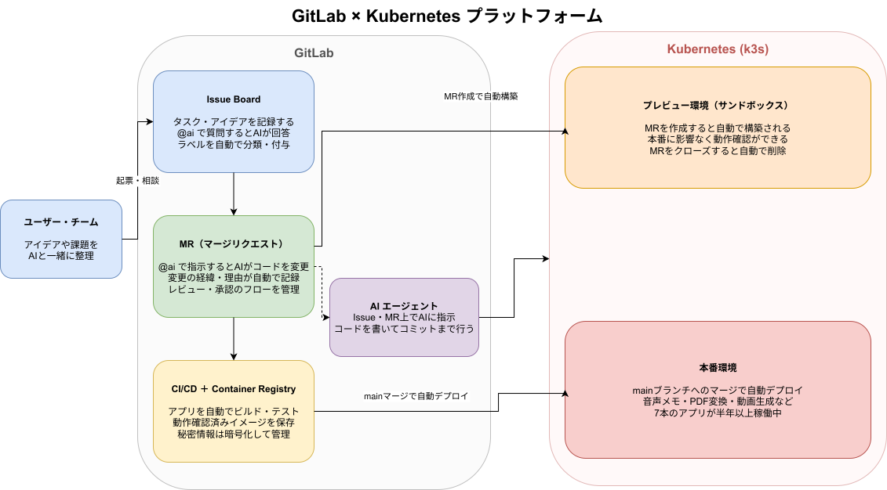
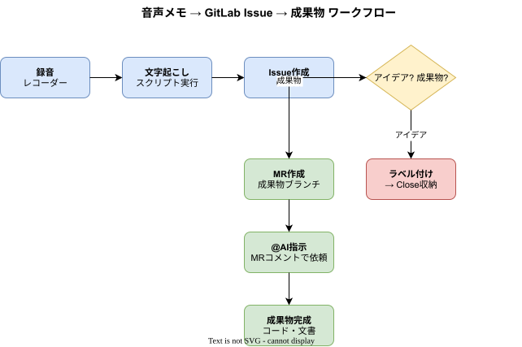
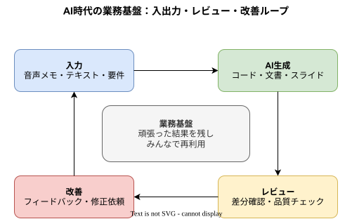

出発点
AIで作れるものが一気に増えた
コード、文章、要件メモ、レビューコメント、スライド。AIを使えば、多くのアウトプットを速く作れる。 これまで試してきた技術やサービスを、より速く形にできる感覚がありました。
背景と考え
Webサービス、ボット、スクレイピング、自然言語処理、インフラ、アプリ。 これまで試してきたことを、AI時代の作り方につなげていきます。
出発点
コード、文章、要件メモ、レビューコメント、スライド。AIを使えば、多くのアウトプットを速く作れる。 これまで試してきた技術やサービスを、より速く形にできる感覚がありました。
課題
何を採用したのか、何を直したのか、なぜそう判断したのか。 作る量が増えるほど、レビューと履歴管理がないと、成果物が作りっぱなしになります。
解決策
AIで何でもできると思った先で、Git、レビュー、Issue、CI/CD、Kubernetesのような技術が、 むしろ以前より重要になると考えるようになりました。
目指す状態
作ったもの、考えたこと、失敗したこと、直したことが次の開発に残る。 そのサイクルを回し、問題解決とアウトプットの量・速度を伸ばしていきます。
大切にしている考え方
何を目指すか、何を大切にするか、何をやらないか。 考え方を言葉にしておくことで、相談、計画、実行、見直しを進めやすくしています。
目標
やりたいことを曖昧なままにせず、向かう先として見える形にします。
計画
目標を予定や作業に落とし、今やることが分かる状態にします。
価値観
守りたいもの、増やしたいもの、減らしたいものを判断の土台にします。
判断基準
軽い判断と重い判断を分け、後悔しない選び方を用意します。
行動指針
大事にしたいことを、具体的な行動や習慣として扱います。
やらないこと
完璧主義や自己満足に流れないよう、手放すものも決めます。
優先順位
論理と情理のバランスを取り、今の自分に必要な順番を考えます。
ビジョン
短期の作業だけでなく、何に近づいているのかを確認します。
運用ルール
一度決めて終わりにせず、更新するタイミングや扱い方も残します。
技術基盤
AI出力をGitで履歴に残し、GitLabでレビューし、K3Sで決まった手順で動かし、 Raspberry Piで安全に動作を確認する環境までつなげています。

レビューの流れ
Issueに考えを残し、AIが作った変更はMRで確認する。 AIに任せる部分と、人間が判断する部分を分けるための流れを試しています。

デプロイのルール
デプロイの道筋を決めておき、Kubernetes/K3S、Ansible、GitOpsで、 AIと接続した作業基盤を安定して動かす土台を検証しています。

知識化の流れ
考えたことを音声メモに残し、Issue、Draw.io、Marp、記事、レポートへ展開する。 思考を次の成果物に残すためのワークフローです。

出力の改善ループ
入力、出力、レビュー、修正、履歴を一つの流れで扱い、 AIが作った成果物を次の開発に残していきます。
作ったもの・試したもの
Webサービス、ボット、スクレイピング、インフラなどから、代表的な試作と実験を選んでいます。 量を見せるだけでなく、背景、使った技術、学びが分かる形に整理しています。
趣味
技術や事業の話だけでなく、作ること、味わうこと、考えて遊ぶことも好きです。 人柄や関心が伝わるものを少しだけ並べています。
検証テーマ
AIと接続する基盤を、サービスとして提供するための検証を進めます。 ビジネスモデル、ユーザー検証、運用、発信を具体化していきます。
GitLab、AIエージェント、音声メモ、K3Sを組み合わせた作業基盤を、 誰にどんな価値を届けるサービスにするか検証します。
非エンジニアでも使える運用マニュアルを整え、 トラブル時はエンジニアが支援する形を作ります。
動画配信、Podcast配信、記事発信を通じて、 相談、AI、仕組み、価値づくりの実践を共有します。
連絡先
IT技術は、工夫すれば誰でも使えるものになります。 相談、メモ、AI、レビュー、履歴、運用を組み合わせ、 困りごとをすぐ解決して価値を生む基盤として育てています。